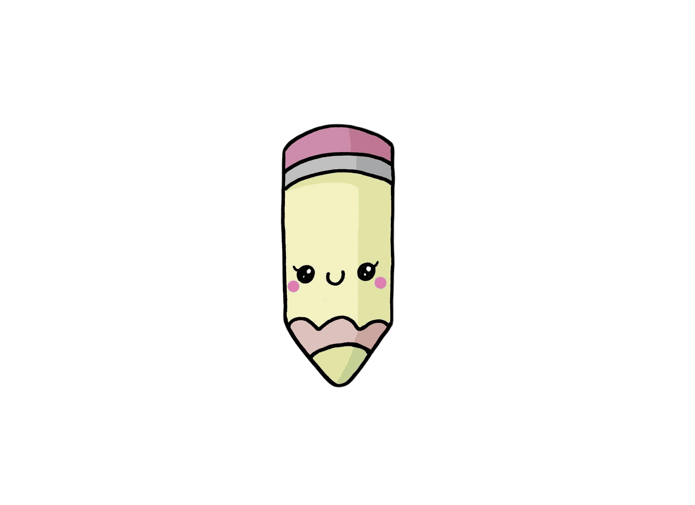

Formato: Libro físico
Autor: Anne Frank
Editorial: Vintage Español
Categoría: Historia
Año: 2018
Idioma: Español
N°páginas: 384
Encuadernación: Tapa blanda
Precio de venta: $13.730
DESCRIPCIÓN
Ana Frank es una niña judía de trece años de edad, amante de los libros y con una gran curiosidad por el mundo que la rodea. El día de su cumpleaños, se levantó con gran entusiasmo para ver los obsequios que le habían hecho; y, entre esos regalos, encuentra el de su mayor agrado: un diario, al mismo que llamará Kitty. La vida de los Frank era normal hasta que en mayo de 1940 se acabaron los buenos tiempos para la familia: primero, por la Segunda Guerra Mundial; luego, la capitulación y la invasión alemana. Poco a poco comenzaron las desgracias para los judíos que les privaba de su libertad como el llevar una estrella de David cosida en su ropa para poder ser identificados, no viajar en medios de transporte, respetar el toque de queda, comprar solamente en un horario determinado y no ingresar a lugares públicos. Las cosas se pusieron aún peor cuando el jefe de familia fue citado por la Gestapo.

